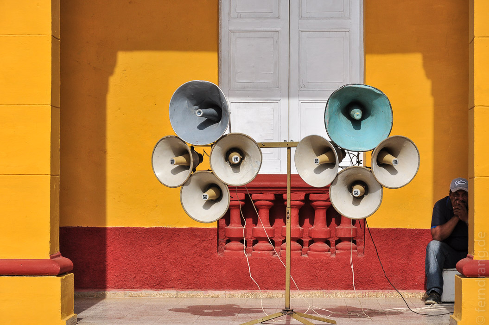
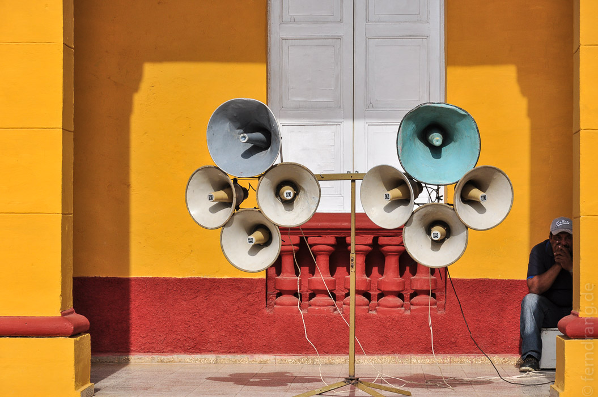

Wir durften noch bis zum frühen Abend die Terrasse unserer Casa in Santiago genießen bevor wir die Nacht in der Eishölle eines Viazul-Busses nach Trinidad verbringen mussten. Die Fahrt dauert zwölf Stunden und führt durch das halbe Land.
Pünktlich zum Morgengrauen sind wir im Kolonialstädtchen Trinidad angekommen. Hier ist der alte Stadtkern noch so wie die Spanier ihn verlassen haben, nur ein paar Jährchen älter. Der alte Glockenturm macht sich sehr hübsch vor der bergigen Kulisse. Das Kopfsteinpflaster hat ähnliche Gehqualität wie unser berühmtes Kölner Stück Römerstraße, verleiht dem Ort aber einen authentischen Charme.
Da wir hier wieder näher an Havanna und Varadero und damit in den Touristengürtel gerückt sind, ist der Ort voller Reisegruppen, denen man ausweichen muss. Auf dem Parque Cespedes haben wir ein improvisiertes Sportfest, kubanische Bundesjugenspiele, miterlebt. Der alte Stadtkern ist zwar wirklich lohnenswert, aber mehr als einen Tag hat man hier nichts zu tun, wenn man keine Ausflüge in die Umgebung unternimmt.
 
